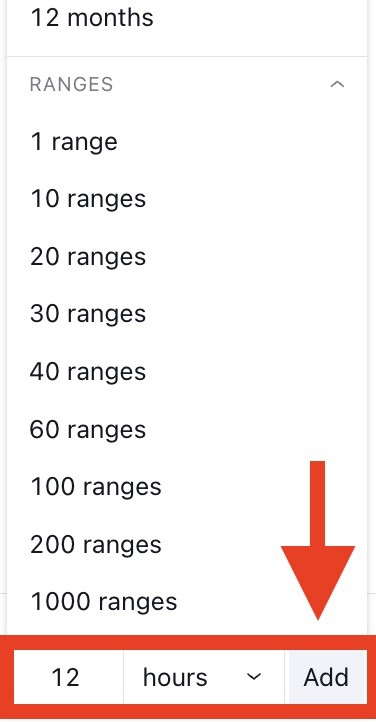
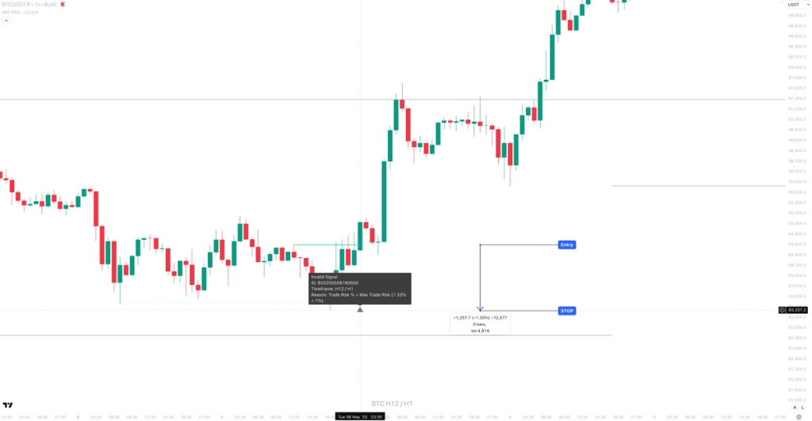
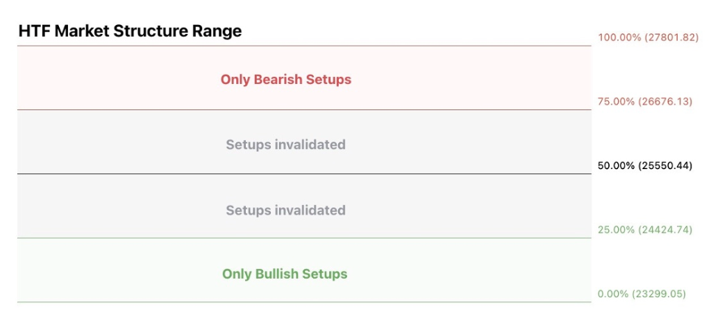
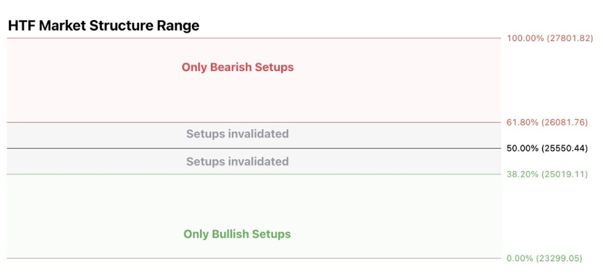
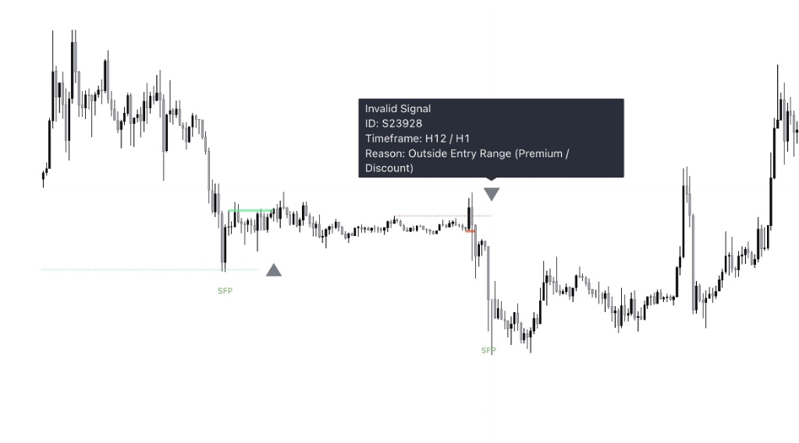
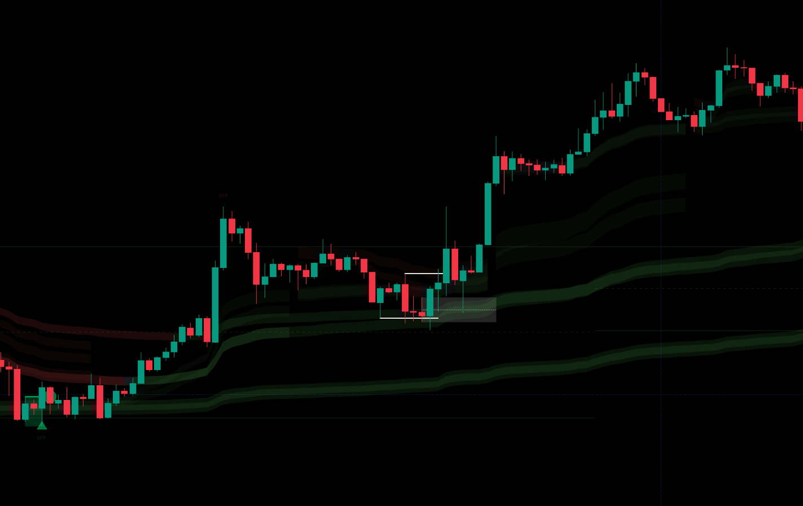
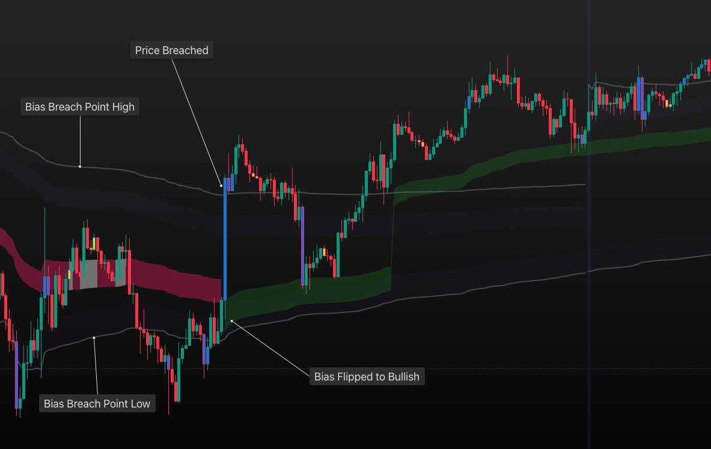
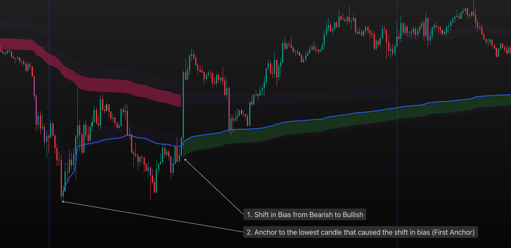
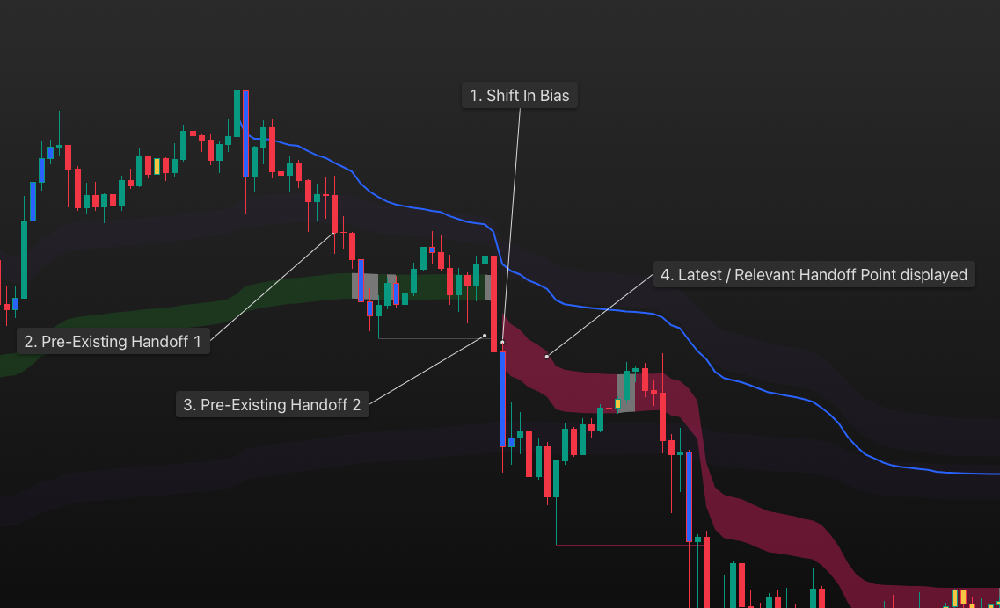

IMG Pro Manual
Complete documentation for the IMG Pro indicator - your time-saving tool for ICT-based price action trading
Introduction to IMG Pro
- Identify Higher Timeframe Points of Interest (POIs)
- Look for potential Trade Setups at HTF POIs
- Identify Targets
- Calculate Position Size / Manage Risk
At its core, the Indicator operates in a structured manner to:
- Range Extremes
- Order Blocks (OBs)
- Breakers
- Fair Value Gaps (FVGs) / OBs+FVGs / Breakers+FVGs
- Internal Liquidity Levels
This manual uses concepts from ICT (Inner Circle Trader). If you're new to these terms, look for the purple highlighted words for quick definitions.
Watch: Market Structure Masterclass- HTF SFP followed by a LTF MSB
- LTF SFP followed by a LTF MSB (OBs / Breakers / FVGs only)
Entries, Stops, Targets and Position Sizes
Indicator Tiers
- Higher Timeframe (HTF) Market Structure Ranges
- HTF Points of Interest (POIs): Order Blocks (OBs) and Breakers
- HTF Market Structure Break (MSB) Alerts
- Additional HTF POI: FVGs
- HTF-LTF Trade Setup Alerts at HTF Market Structure Extremes
- LTF-LTF Trade Setup Alerts at enabled HTF POIs
- Automatic Position Sizing / Risk Management
- Fixed R:R Exits
- Extend untested HTF POIs
- HTF-LTF Setups at Enabled HTF POIs
- Fluid Exits (exit on opposite signals)
- Customisable Max Trade Risk
- OB+FVG Overlaps
- Breaker + FVG Overlaps
- Internal Liquidity Levels
- All HTF-LTF Trade Setups at HTF Liquidity Levels (With trend and Counter Trend)
- 5 Entry and 4 Exit Modes + Alerts
- 2 Early Warning Systems
- Custom Premium / Discount Levels
- Customisable Trade Invalidations
- Multiple Structure Break types
- Automated backtesting system
- Trend Filter Companion indicator
- Auto Anchored VWAP indicator
System Access
To gain access to this system:
- Setup an account at IMG - An Essential Toolkit For Price Action Traders
- Select a product tier that suits your trading style
- Subscribe for access within 24 hours
- You will find the indicator(s) in the invite only scripts section of TradingView:
Basic Settings
HTF Structure
Trading with the "Higher Timeframe" (HTF) is like looking at a map before driving. It helps you see the major trend so you don't get caught in the "noise" of smaller moves.
Use this dropdown located at the top of the settings panel to calculate and display a higher timeframe's Market Structure (MS) and its corresponding Points of Interest (POIs). In order for the timeframe of your choice to appear in this dropdown you need to ensure it is selected as a favourite in your Tradingview timeframes dropdown. If you would like to use a non-standard timeframe, you will first need to create a custom timeframe and then add it to your favourites.
Creating a Custom Timeframe in Tradingview
1. Select the timeframe dropdown located above your chart
.png)
2. Scroll to the bottom of the list, enter your custom timeframe and click on "Add"
3. Add the new custom timeframe to your favourites by going back to the timeframe dropdown and clicking on the star next to it. Once Starred, it will display in your timeframe favourites bar

4. Your custom timeframe will now appear in the Indicator's timeframe dropdown
Once you have selected your preferred HTF Structure timeframe from the dropdown, it’s Market Structure is displayed in the form of a range high and low. MS Bias will be displayed as Bullish=Green and Bearish=Red throughout this Knowledge Base but colours are customisable in the style section of settings
BYBIT:BTCUSDT.P Chart Image by IMGPro
.png)
HTF Break Type
The system has various options to determine structure breaks:
1. MSB (Market Structure Break)
This is the most common and conservative technique that calculates structure and breaks using the following rules:
Bearish Structure:
(a) Structure High: The three bar pivot high that caused the previous structure break
(b) Structure Low: The first three bar pivot low that forms after a structure break
Bullish Structure:
(b) Structure Low: The three bar pivot low that caused the previous structure break
(a) Structure High: The first three bar pivot high that forms after a structure break
.png)
2. First Opposite Pivot (MSS) - Aggressive
A more aggressive approach to calculate structure and breaks using the following rules:
Bearish Structure:
(a) Structure High: The first opposite three bar pivot high after a structure break
(b) Structure Low: The first three bar pivot low that forms after a structure break
Bullish Structure:
(b) Structure Low: The first opposite three bar pivot high after a structure break
(a) Structure High: The first three bar pivot high that forms after a structure break
.png)
More aggressive than the last to calculate structure and breaks using the following rules:
Bearish Structure:
(a) Structure High: The closest unbroken opposite three bar pivot high to price after a structure break
(b) Structure Low: The first three bar pivot low that forms after a structure break
Bullish Structure:
(b) Structure Low: The closest unbroken opposite three bar pivot low to price after a structure break
(a) Structure High: The first three bar pivot high that forms after a structure break
.png)
Extremely aggressive approach that applies the closest pivot logic to both sides of the range:
Bearish Structure:
(a) Structure High: The closest unbroken opposite three bar pivot high to price after a structure break
(b) Structure Low: The closest unbroken opposite three bar pivotlow to price after a structure break
Bullish Structure:
(b) Structure Low: The closest unbroken opposite three bar pivot low to price after a structure break
(a) Structure High: The closest unbroken opposite three bar pivot high to price after a structure break
.png)
Hide Historical
This toggle will hide all historical Market Structures and associated Points of Interest. If toggled on, only the current HTF Market Structure and associated information will be displayed.
.png)
.png)
Display 50% Range Line
This toggle will display the HTF Structure’s mid point in the form of a dashed line.
.png)
Equal Highs / Lows as Pivots
This toggle will allow you to identify up to three sequential equal highs as pivot highs if they are preceded and superseded by lower highs and vice versa for pivot lows.
Examples (Prices in Bold Yellow are the pivot points if this feature is toggled on): Case 1: Price points: 104 100 103 100 102 (simple pivot -- piv is bar 3)
Case 2: 100 103 103 100 101 (eq pivot from left -- piv is bar 3)
Case 3: 100 101 103 103 101 (eq pivot from right -- piv is bar 4)
Case 4: 100 103 103 103 100 (eq pivot -- piv is bar 4)
Chart TF and Alerts
This toggle will hide ALL trade setups, signals, invalidations etc if the chart timeframe is equal to the selected HTF structure timeframe. Can be used to clean up the chart when switching to the HTF Structure Timeframe.
Select the method for managing TradingView alerts
ALL: TradingView alerts will notify you of every alert according to your configurations, including Trade Setups, Stop Losses, Take Profits, Invalidations, and more.
Valid Signals Only: TradingView will notify you exclusively of legitimate trade setups and Take Profit levels based on your settings
Backtest Settings
.png)
Basic Settings
| Setting | Description |
|---|---|
| Table Size | Select the backtest results table size to display on the top right of your chart |
| Disable Backtester | Enable/Disable the backtesting system |
| Custom Start Date Toggle | Toggle on to enable a custom start date for backtesting (the system will begin from the beginning of your chart if this is disabled) |
| Custom Start Date | Enter the custom date/time for backtesting to begin from |
Backtest Results
The backtesting system will provide the following details based on the applied settings:
| Metric | Description |
|---|---|
| Initial Capital | The starting balance of your account at the beginning of the backtest. This is entered in the Risk Management Section in settings |
| Available Capital | Current available capital based on the backtest results of all closed trades |
| Net Profit | Total Profit or Loss achieved in the backtest |
| Closed Trades | Total number of closed trades in the backtest |
| BE Trades | Total number of Break Even trades during the backtest |
| Delta Trades | Total number of trades that were not break even during the backtest |
| Winning Trades | Total number of winning trades |
| Max Drawdown | The largest single drop in capital value from all closed trades during the backtest period. The Peak and Trough dates and trade IDs are provided in the results tables to easily find and analyse them on the chart |
| Profit Factor | Total value of all winning trades divided by the total value of all losing trades |
| Open Trades | Total number of current open trades |
| Max Win | Largest win during the backtest period. Max winning trade date and trade ID is provided in the results tables to easily find and analyse it on the chart |
| Max Loss | Largest loss during the backtest period |
| Avg Trade Win | Average win/loss of all closed trades |
| Avg Profit Per Trade | Average Profit/Loss based on all closed trades in the backtest |
| Avg Bars Per Trade | Average duration of each trade calculated in chart timeframe bars |
| Current Portfolio Value | Current capital taking into account all closed trades during the backtest |
| Buy and Hold P&L | Profit or Loss if the instrument was purchased and held at the backtest start date |
| Outperform | Indicator performance vs Buy & Hold P&L |
| Start Date | Start date of the Backtest |
Colour Coding
The table is colour coded to help identify good results at a glance. Colour coding focuses on finding results that could be compatible with trading under prop firm conditions, i.e. High Profit Factor and Low Max Drawdown:
| Max Drawdown | Display |
|---|---|
| DD < 10% | Green Text |
| DD 10-15% | Yellow Text |
| DD > 15% | Red Text |
| Profit Factor | Display |
|---|---|
| PF < 1 | Red Text |
| PF 1 - 1.5 | Yellow Text |
| PF > 1.5 | Green Text |
Example: BTCUSDT.P BingX H12-H1:
.png)
Higher Timeframe (HTF) Points of Interest (POIs)
.png)
POI 1: HTF Order Blocks
An Order Block is identified as the last opposite candle to print before a Market Structure Break. Ie, a bullish Order Block is the last down candle before a bullish Structure Break and a bearish Order Block is the last up candle before a bearish Structure Break
.png)
To extend untested HTF OBs or HTFOBs + FVGs, click on the “extend” toggle next to the dropdown.
For an OB or OB+FVG to qualify for extension, HTF Market structure needs to break without price having tested the Breaker.
When this toggle is enabled, all untested HTF OBs or OB+FVGs will extend to the right until price tests it at a future date.
- OBs / OBFVGs: Remain valid as long as the HTF Structure is in play.
- Extensions: Remain valid until tested
- OBs / OBFVGs: Invalidated if price closes through them on the HTF Structure timeframe
- Extensions: Invalidated if price closes through them on the HTF Structure timeframe OR if price tests them followed by a HTF MSB.
POI 2: HTF Breaker Blocks
A Breaker Block is identified as the most recent Order Block that has been breached by price, leading to an opposite Market Structure Break. For example, a bullish Breaker Block is the last bearish Order Block that price has passed through, confirming a bullish structural break, and the inverse is true for bearish Breakers
.png)
When enabled, the system will only display and use HTF Breakers that overlap with HTF Fair Value Gaps as Points Of Interest
To extend untested HTF Breakers or HTF Breakers + FVGs, click on the “extend” toggle next to the dropdown.
For a Breaker or Breaker+FVG to qualify for extension, HTF Market structure needs to break without price having tested the Breaker.
When this toggle is enabled, all untested HTF Breakers or Breaker+FVGs will extend to the right until price tests it at a future date.
- Breakers / BRKRFVGs: Remain valid as long as the HTF Structure is in play.
- Extensions: Remain valid until tested
- Breakers / BRKRFVGs: Invalidated if price closes through them on the HTF Structure timeframe
- Extensions: Invalidated if price closes through them on the HTF Structure timeframe OR if price tests them followed by a HTF MSB.
POI 3: HTF Fair Value Gaps (FVGs)
A FVG typically forms when there is a significant price movement, creating a gap between the high of one candlestick and the low of another (or vice versa) without overlap.
- Bullish FVG: A large bullish candle followed by a second bullish candle or gap up, where the low of the third candle is higher than the high of the first candle.
- Bearish FVG: A large bearish candle followed by a second bearish candle or a gap down, where the high of the third candle is lower than the low of the first candle.
.png)
- FVGs are agnostic to HTF Market Structure so if toggled on, both bullish and bearish FVGs will be displayed
- FVGs will not display if with OBFVGs or BRFVGs are enabled in POI 1 or POI 2
To extend untested HTF FVGs, click on the “extend” toggle next to it. For a FVG to qualify for extension, HTF Market structure needs to break without price having tested the FVG. When this toggle is enabled, all untested HTF FVGs will extend to the right until 100% filled at a future date.
POI 4: HTF Internal Pivots (Display Only)
.png)
HTF Close to Invalidate POIs
All OBs, OB+FVGs, Breakers and Breaker+FVGs remain valid as long as the HTF range remains valid. UNLESS “Use HTF Close Through to Invalidate OBs / BRKRs” is enabled in settings.
Trade Setups
HTF-LTF Trade Setups at HTF POIs
.png)
Range Extremes & Old Untested
- Market Structure Breaks
- HTF Swing Failure Patterns (SFPs)
- HTF-LTF Setups
When HTF price closes through a range extreme, an alert will trigger confirming a Market Structure Break. This is hard coded into the indicator and as long as “ALL” alerts are enabled, this will fire for all indicator tiers.
.png)
.png)
.png)
.png)
When enabled, old untested HTF highs and lows that are outside the current range will be used for SFP and Setup alerts as described above
HTF-LTF Setups at Liquidity
- At POIs
- ALL
- ALL - With Structure
When enabled and the Trade Setup Criteria is met, the system will only display setups at enabled HTF POIs (OBs/Breakers/FVGs) and in line with the direction of the POI.
.png)
When enabled and the Trade Setup Criteria is met, the system will display ALL setups - both with HTF trend and counter-trend (Bullish AND Bearish) regardless of HTF structure and enabled POIs.
.png)
.png)
Enabling this will display Alerts and Lebels for SFPs at internal liquidity levels per your selection on setups.
ie. If you selected "ALL", then SFPs will print on all internal HTF pivots. If you selected "With Structure", then only SFPs on internal pivots with structure will print. If you selected "At POIs" then only SFPs inside enabled POIs will activate
HTF-LTF Early Warning Systems
- LTF Structure Break
- LTF FVG
If enabled, the system will generate a potential setup alert if price cuts through a HTF level (Range Extreme / Internal Liquidity) and prints an opposite LTF MSB back through that level. This is a more aggressive approach where the system does not wait for the HTF SFP to be confirmed.
.png)
If enabled, the system will generate a potential setup alert if price cuts through a HTF level (Range Extreme / Internal Liquidity) and prints an opposite LTF FVG back through that level. No LTF MSB is required and a limit order at the FVG is signalled. This is a more aggressive approach where the system does not wait for the HTF SFP to be confirmed.
.png)
LTF -LTF Trade Setups at HTF POIs
.png)
- HTF POIs
- Confirmed HTF-LTF Signals
1. HTF POIs:
If enabled, a potential trade setup label will generate when a LTF SFP is generated inside an enabled HTF POI (OBs/Breakers/FVGs) followed by a LTF Structure Break
.png)
2. Confirmed HTF-LTF Signals
If enabled, a potential trade setup label will generate when a LTF SFP is generated inside a confirmed HTF-LTF setup followed by a LTF Structure Break
.png)
- The first LTF-LTF signal in this type of setup will only generate inside a HTF-LTF setup
- The HTF-LTF signal can be valid or invalid (due to invalidation rules) and will be used for LTF-LTF setups as long as price has not breached its stoploss level
- Once the first LTF-LTF signal is generated, subsequent signals will be generated inside valid LTF-LTF signals
LTF SFP Toggle
When enabled:
- SFPs generated on the Chart Timeframe SFP at enabled HTF POIs will display on screen
- Tradingview Alerts will be activated to send you alerts when a LTF SFP at a HTF POI is confirmed
Trade Entries and Exits
Trade Entries
.png)
LTF Break Type
Depending on your appetite for aggression, there are six types of LTF structure breaks that can be used to identify potential trade setups:
- MSB: Market Structure Break
- MSS: Market Structure Shift
- CP: Closest Opposite Pivot
- Breaker: High / Low
- Breaker: Close
- First: Breaker or MSS
1. MSB: Market Structure Break:
When selected, the system will use the first opposite pivot (in the current chart timeframe) to the left of a confirmed SFP to calculate a break in market structure when price closes through it:
.png)
2. MSS: Market Structure Shift:
When selected, the system will use the first opposite pivot (in the current chart timeframe) to the left OR right of a confirmed SFP to calculate a break in market structure when price closes through it.
MSS’ are more sensitive and may provide more false signals but are useful when there are big spike liquidity runs
.png)
3. CP: Closest Opposite Pivot:
Similar to but more aggressive than MSS, the system will use the closest unbroken opposite pivot after a SFP or potential SFP to calculate a break in structure.
.png)
4. Breaker: High/Low
Similar to but more aggressive than MSS, the system will use the closest unbroken opposite pivot after a SFP or potential SFP to calculate a break in structure.
.png)
5. Breaker: Close
This is the same as Breaker high/low but using the breaker's close price instead of high/low. Slightly more aggressive
6. First: Breaker or MSS
The system will use whichever comes first between MSS and Breaker:High/Low
Do not Require SFP
LTF Entry Mode & Require FVG
There are four types of LTF position entry modes available. The selected mode will determine where the indicator will place a limit entry and calculate position size when a valid setup is confirmed.
- MSB Level
- Market Entry on Signal
- Breaker
- OB
1. MSB Level
When selected, a trade signal and label will appear with a limit order to be placed at the point price created the enabled LTF Structure Break level.
The signal box will cover the total trade risk (The MSB Level to Stoploss) making trades easy to spot and manage.
A triangle will also be displayed at the edge of the box in the direction of the trade. You can hover over it with your mouse to reveal relevant trade details including entry / stop / trade risk and position size.
.png)
2. Market Entry on Signal
When selected, a trade signal and label will appear as soon as the signal is confirmed instructing you to enter at market
The signal box will cover the total trade risk (The Market Entry Level to Stoploss) making trades easy to spot and manage.
A triangle will also be displayed at the edge of the box in the direction of the trade. You can hover over it with your mouse to reveal relevant trade details including entry / stop / trade risk and position size.
.png)
3. Breaker
When selected, a trade signal and label will appear with a limit order to be placed at the LTF Breaker.
The signal box will cover the total trade risk (Breaker Entry Level to Stoploss) making trades easy to spot and manage.
A triangle will also be displayed at the edge of the box in the direction of the trade. You can hover over it with your mouse to reveal relevant trade details including entry / stop / trade risk and position size.
.png)
4. OB
When selected, a trade signal and label will appear with a limit order to be placed at the LTF Order Block.
The signal box will cover the total trade risk (OB Entry Level to Stoploss) making trades easy to spot and manage.
A triangle will also be displayed at the edge of the box in the direction of the trade. You can hover over it with your mouse to reveal relevant trade details including entry / stop / trade risk and position size.
.png)
Require FVG (Toggle)
When enabled, a LTF FVG is required inside a setup for it to be confirmed. The LTF FVG can be bullish OR bearish regardless of the direction of the signal.
.png)
Max Trade Risk and Premium/Discount
When enabled, the system will only consider a setup valid as long as the distance between the entry mode and stoploss is within the Max Trade Risk parameters.
Example:
- Confirmed HTF SFP
- Confirmed LTF MSB
- Entry Mode: MSB Level
- Max Trade Risk enabled to 1%
In this example, the system will only treat a setup as valid IF the price difference between the LTF MSB Level and SFP Swing low is less than or equal to 1%. In the chart example below, the system treated this setup as invalid as the price variance between the MSB Level and SFP Low ( stoploss) was 1.33%.
*Invalid setups will still display on the chart with a reason for invalidation (see: grey box in screenshot)*
The system can be setup to only display signals that are in the top or bottom n% of the HTF Market Structure Range
A value of 0 (default) will disable the premium/discount system and utilise the entire range for all signal types (bullish and bearish)
To enable the premium / discount system, enter a % value between 0 - 50:
Examples:
A value of 50% will only display bullish signals that have, at minimum, tagged the bottom half of the range and vice versa for bearish signals.
A value of 25% will only display bullish signals that have tagged the bottom quarter of the range and vice versa.
A value of 38.2% will display signals that tag the top and bottom 38.2% of the range (equivalent of the 61.8% OTE. retracement) Etc.
*Range activation with 25 % premium /discount enabled:*
*Range activation with 38.2 % premium /discount enabled:*
Invalidation Labels
When a setup is out of bounds based on these settings, a grey label will appear with details of why the signal is invalid (outside premium/discount levels)
Trade Exits
.png)
Three partial exits at fixed R:R points can be setup. Enter the percentage exit of each partial in the boxes to the left and at what R:R in the boxes to the right.
If being used as stand alone, then the total percentage of the partials needs to add up to 100%.
If being used in conjunction with another exit type (Range Extremes / HTF POIs / Opposite Signals), then the total does not need to add up to 100%.
EXAMPLE: If set to 25% exit at 1R, 50% exit at 3R and “Exit at Valid Opposite Signal” is enabled:
If TP1 and 2 are hit, then the system will exit the balance on a valid opposite signal or Stoploss.
If TP1 is hit and an opposite signal prints before TP2, the entire balance will exit (the system will ignore TP2)
if no TP is hit and a valid opposite signal prints, the entire position will be closed.
Can be used as stand alone exits or in conjunction with Partials as detailed above
Options:
- Any Opposite Signal: The system will exit as soon as any opposite signal prints based on the settings applied. This includes valid and invalid signals. For EXAMPLE, an invalid signals could be an opposite signal without a FVG when “Require FVG in Signal” is enabled
- Valid Opposite Signals: The system will only exit once a valid opposite signal is confirmed. Using the same example above, it will only exit when an opposite signal with a FVG prints.
Can be used as stand alone exits or in conjunction with Partials as detailed above
Options:
- Range Extremes: The position will exit at untested Range Extremes. If the Range Extreme is tested, then it will exit at the highest high or Lowest Low beyond the extreme of a valid range
- Closest Untested HTF POI: When enabled, the system will signal a trade exit when price comes into either:
- An untested HTF POI (Breaker/OB/FVG). This will be based on the POIs enabled in the "HTF Points of Interest (POIs)" settings above, OR
- An untested Range Extreme. If the Range Extreme is tested, then it will exit at the highest high or Lowest Low beyond the extreme of a valid range
Unentered Trade Invalidations
.png)
When enabled, any pending limit orders will be cancelled if an opposite HTF SFP is confirmed before entry. In the chart example below, the Long setup limit entry was cancelled as an opposite HTF SFP was confirmed before entry.
.png)
When enabled, pending limit orders will be cancelled if an opposite signal is confirmed before entry. In the example below, the short signal was invalidated as a bullish signal was confirmed before entry.
.png)
When enabled, pending limit orders will be cancelled if a HTF MS Break occurs. If disabled, limit orders will remain regardless of HTF Structure Breaks. Important to note that there will be a lot of older unentered limit orders kept pending if this is disabled.
When enabled, signals will be invalidated if their LTF MSB level is outside the current HTF Structural Range.
Risk Management
Risk Management is the secret to staying in the game. Most pro traders never risk more than 1% of their account on a single trade.
Watch: Risk Management Basics.png)
| Setting | Description |
|---|---|
| Capital | Enter your current trading capital here |
| Lot Size | Enter Lot Size to display label/alert position size in lots |
| Risk Calculation Type | Select whether you want to use a percentage of your capital or a fixed 'dollar' amount to risk per trade |
| Max Risk Per Trade | Enter the maximum percentage of your capital or fixed 'dollar' amount to risk per trade |
| Maker Fee Per Trade (%) | Input the maker fee per trade provided to you from your exchange. This will be used in position sizing calculations |
| Taker Fee Per Trade (%) | Input the taker fee per trade provided to you from your exchange. This will be used to calculate fees on market orders (Stoplosses / Some Exits / Some Entries) |
| Stop Loss Ticks | Enter number of ticks stoploss should be placed away from SFP extremes. A Tick is the smallest denomination an instrument can trade |
| Max Leverage | Enter the leverage you wish to apply on your capital. Position sizing will always be based on your max risk per trade settings but using leverage on lower timeframes will give you larger position sizes while keeping true to your risk appetite |
| Use Taker Fees for Pos Size & TPs | Uses TAKER Fees for all exits in position size calculations. Useful on low timeframes where position sizing can be huge with leverage. If you get stopped with a large position size, the fees of the stop could end up being greater than the set max risk per trade. By enabling this feature, your position size will be reduced, but even if stopped, max loss won't exceed your set max risk parameters |
| Use Portfolio Value for Risk Calculations | Enable to use the portfolio value (Current Capital + Value of Open Positions) for position size calculations. Disable to use Available Capital for Position Size Calculations (Current Capital - Margin Used for Open Positions) |
| Set Stoploss to Entry at R:R | Enter R value for a position to achieve before moving a position's stoploss to its entry point |
| Use Breaker for Stoploss | Use the breaker extreme as your stoploss level instead of the SFP extreme |
Trading Sessions
.png)
| Setting | Description |
|---|---|
| Trade on Specified Days | Specify which days to activate trading on the indicator. Numeric
values are assigned to each day: 1 = Sunday 2 = Monday 3 = Tuesday etc |
| Session 1 | Enter a custom intraday session start and end time and toggle on to enable it. When enabled, trades will only be taken between the start and end times |
| Session 2 | Enter a custom intraday session start and end time and toggle on to enable it. When enabled, trades will only be taken between the start and end times |
| Session Timezone | Select your preferred timezone for the session timings entered above. Default is UTC. |
| Auto Close Position at Session End | Enable to automatically close any positions at the end of each enabled session |
Market Vs Limit Order Conditions
Limit Order Conditions
If price closes outside your entry mode on a trade setup confirmation, the system will alert you to place a Limit Order at your entry mode extreme
- Bearish HTF SFP confirmed
- Bearish LTF MSB confirmed
- Entry Mode MSB Point enabled
- HTF Price closes above the LTF Breaker
A trade setup alert will be generated to place a Limit Order at the LFT Breaker and the shaded green trade risk box will be displayed from the LTF Breaker High to the SFP low (Stoploss Level). The Green Box signifies the total trade risk of the setup.
.png)
Market Order Conditions
If price closes Inside your entry mode on a trade setup confirmation, the system will alert you to place a Market Order
- Bearish HTF SFP confirmed
- Bearish LTF MSB confirmed
- Entry Mode MSB Point enabled
- HTF Price closes between the MSB point and SFP Extreme
A trade setup alert will be generated to place a Market Order and the shaded red trade risk box will be displayed from the point of market entry to the SFP low (Stoploss Level). The Red Box signifies the total trade risk of the setup.
.png)
Setting Up Tradingview Alerts
If Tradingview Alerts are enabled, the indicator will fire an alert based on your settings.
IE: if a label prints on screen, you will be prompted with a Tradingview Alert unless Alerts: ‘Valid Signals’ is selected in Basic Settings in which case only valid trade signal alerts will be generated.
To enable alerts, once you have finalized the settings you want :
1. Right click on the indicator and select "Add Alert on IMG..."
.png)
2. Customise the alert name in the message tab of the alerts pane
.png)
3. Click on "Create"
.png)
Indicator Labels
.png)
.png)
- SFPs
- Trade Signals - *Green or Red Triangles*
- Trade Entries - *Circles*
- Trade Invalidations (Cancellation of unentered trades, or Invalid Trade Signals due to custom exit criteria) - *Grey Triangles*
- Stop-losses - *Grey Squares*
- Take Profits - *Green or Red Squares*
Study Errors
A study error (red exclamation mark) may display next to the indicator name on the top left corner of your screen. Error details can be revealed by clicking on the red exclamation mark
.png)
.png)
At times, you may encounter a timeout study error. This issue can arise from the system's intricate functionalities, particularly when numerous features are enabled concurrently, causing the system to approach the memory allocation limits permitted by TradingView..
If you see this error, you can:
- Reduce the number of applied settings
- Quickly switch the chart timeframe to something else and back to refresh the screen
- Refresh your browser (though less effective than timeframe switch)
- Remove the indicator and add it back to the chart
VWAP Trend Filter
This is a separate indicator available exclusively to Pro tier subscribers.
Overview
This indicator aims to identify the underlying market sentiment using various VWAP anchor points. The system operates with two primary anchor periods:
- Short Period
- Default is set to one day
- Long Period
- Default is set to one week
VWAP Levels Displayed
For each of these periods, the following VWAP levels are displayed:
- Current session VWAP
- Previous session VWAP
- Previous session's highest high VWAP
- Previous session's lowest low VWAP
Sentiment is visually represented with bullish or bearish colours, depending on whether the price closes above or below these levels. Once the two anchor periods are set the displayed levels remain static across all timeframes, so if you prefer looking for multiple confirmations on lower timeframes the levels will remain the same whether you're on the H1 or the M5
HOW TO USE: There are multiple ways you can use this system - here are two simple techniques:
1. As a Filter for IMG PRO Signals:
Use the trend filter to align your trades with the prevailing market trend. For example:
- Avoid taking long positions when there is significant supply overhead.
- Similarly, avoid short positions if there is strong demand below the price.
.png)
BINGX:BTCUSDT.P Chart Image by IMGPro
2. As a Stand-Alone System:
- Bullish: Wait for the price to come into green bands, sweep some lows, and produce a bullish break structure. If the resulting order block (OB) or breaker aligns with the green bands, place limit orders; alternatively, enter at market if you prefer a more aggressive approach.
- Bearish: Wait for the price to come into red bands, sweep some highs, and produce a bearish break in structure. If the OB or breaker coincides with the red bands, place limit orders, or enter at market if acting aggressively.
- Use the short-term anchors for precise entry points and the long-term anchors to determine the broader trend and identify key points of interest for execution. Avoid countertrend trades (e.g., no shorts if the long-term anchors are green, and no longs if the long-term anchors are red).
.png)
https://www.tradingview.com/x/2I6X6gkN/
When to ignore these rules:
Old High / Low taken and signal prints - you will have a lot of supply overhead or demand below. Worth taking a punt to catch the absolute high/low. For additional confluence look for divergences with these IMG signals.
Note 1: Look for OBs that align with the bands in the direction you’re looking to trade as potential knife catch entry points
.png)
BINGX:BTCUSDT.P Chart Image by IMGPro
Note 2: Once a trend is established, wait to price to come back into the bands an print a setup (Sweep / BOS) and enter at breaker or OB that overlaps with the bands
Note 3: If you see something like this - price rallies, ranges/distributes over the weekend and starts of the next week with a bunch of red bands above price, that a pretty strong reversal signal. combine this with one of the two entry techniques above and you can ride it from the start.
.png)
Auto Anchored VWAP (AAVWAP)
What is Anchored VWAP?
The Volume Weighted Average Price (VWAP) is a key trading indicator that calculates the average price of an asset, weighted by volume, over a specified period. Unlike the standard VWAP, which resets daily, an Anchored VWAP allows traders to set a custom starting point—such as a significant high or low—to analyse price action from a specific market event.
This provides a more contextual view of support, resistance, and trend behaviour.
Brian Shannon's Anchored VWAP Methodology
Brian Shannon, a respected trader and author of Technical Analysis Using Multiple Timeframes, advocates using Anchored VWAP to identify critical price levels based on significant pivots. By anchoring the VWAP to key highs or lows—often marked by high volume or trend reversals—traders can:
- Assess institutional activity
- Confirm trends
- Pinpoint potential entry or exit points
Shannon's approach emphasizes its utility across multiple timeframes, making it a versatile tool for both day traders and swing traders.
2.1 Type Options
Type Dropdown:
Select the band calculation type:
- VWAP (default) - Uses volume-weighted data
- SMA - Simple Moving Average, for instruments without volume data
Band Type Dropdown:
Select the band width to display. The system uses two source calculations from anchor points:
- OHLC4: Uses OHLC4 and Low (bullish) or OHLC4 and High (bearish). The upper part of the band is OHLC4 and lower part is from the auto-identified anchor point
- HIGH-LOW: Uses High and Low sources, regardless of market sentiment
- Lines: Only OHLC4 lines will be displayed. No bands.
2.2 Anchor Options
Anchor Period:
Used to:
- Determine Breach Points for Bias: The system detects a shift in
bias when price hits "Breach Point" levels, calculated using the highest and
lowest of:
- Current Session VWAP
- Previous Session VWAP
- Previous Session Highest High VWAP
- Previous Session Lowest Low VWAP
- Display Session Based VWAPs/SMAs
Anchor Timeframe:
Anchor points and breach levels can vary based on the chart timeframe. For example, if your Anchor Period is 1 Week, it may display differently on H1. To mitigate this, select a specific chart timeframe to anchor to ensure consistency across all timeframes.
This is designed for drilling down to lower timeframes while anchoring to a higher timeframe. Example: anchor to H1 and view on M5.
Display Session Breaks:
Enable this to display a vertical line identifying the start of a new session (Anchor Period).
2.3 Auto Anchor and Handoffs
First Anchor:
Enable this to display the initial anchor after a shift in bias up until the point of an opposite shift in bias.
Handoff Anchors:
When price tags a VWAP level and moves significantly away from it, adding a fresh anchor to the last time price tagged VWAP is a Handoff Anchor.
Option 1: Using Breach Levels
- Price tags a breach level (without closing through it)
- Makes a close through Higher High (if bullish)
Option 2: Using VWAP Levels (enabled by default)
To use Option 1, disable 'Require Anchor Tag and Breach for Handoffs'
- Tag a VWAP Level (Either First or an existing handoff)
- Close through the highest high that caused price to tag the VWAP level
Handoff Sensitivity:
Select between OHLC4 and High-Low bands to determine handoff points. High-Low is more sensitive/aggressive as the band width is wider, resulting in more aggressive handoffs.
Anchor Tag and Breach for Handoffs:
See Option 2 above.
Display Handoff Breach Lines:
Enable this to display the breach lines for a handoff to occur using Option 2 (i.e., the highest high that caused price to tag VWAP if bullish, or the lowest low if bearish). Lines will only display once they have been breached.
Enable Pre-Existing Handoffs:
Enabling this will get the system to calculate if there were already any handoffs prior to a shift in bias, displaying the most current and relevant VWAP handoff as soon as a shift in bias occurs. This only works with Option 2.
2.4 Session Anchors
Use these options to display the current and previous session anchors based on the selected Anchor Period.
NB: Use the transparency input to adjust brightness. The slider in the colour picker is disabled.
2.5 Debug Options
These options will display the Bias shift Breach levels and the anchor points for First Anchor and subsequent Handoffs.
Educational Content
A complete directory of all educational video content found throughout this manual. Click on a topic to jump to its relevant section where you can watch the embedded video and see how it applies to the indicator settings.